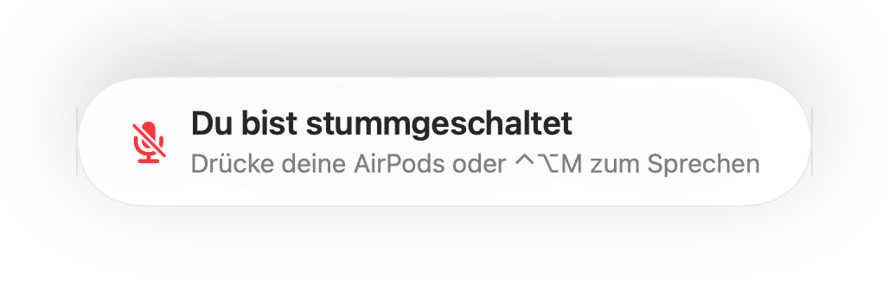

Eine „Du bist stummgeschaltet“-Erinnerung für jede Anruf-App
Zoom warnt dich, wenn du bei Stummschaltung sprichst. Die meisten anderen Apps tun das nicht, und Anrufe im Browser fast nie. Du erklärst eine Minute lang etwas und bemerkst erst dann, dass alle nur auf dich warten.
Muffle erkennt Sprache bei aktiver Stummschaltung und zeigt eine Erinnerung an, in jeder App. Wenn der Anruf AirPods oder ein Headset nutzt, lauscht Muffle am internen Mac-Mikrofon, und zwar nur auf die Lautstärke. Es wird nichts aufgezeichnet.
Erinnerung aktivieren
- 1
Installiere Muffle und erlaube den Mikrofonzugriff.
- 2
Vergewissere dich, dass „Erinnern, wenn ich bei Stummschaltung spreche“ in den Muffle-Einstellungen aktiv ist.
- 3
Tritt einem Meeting mit AirPods oder einem Headset bei und schalte dich stumm.
- 4
Beginne zu sprechen. Die Erinnerung „Du bist stummgeschaltet“ erscheint.

- Trittst du einem Anruf bei und bist noch vom letzten Meeting stummgeschaltet? Muffle erinnert dich direkt zu Beginn des Gesprächs.
- Tippen auf der Tastatur löst die Erinnerung nicht aus. Nur kontinuierliches Sprechen schlägt an.
Häufige Fragen
Funktioniert die Erinnerung auch mit dem internen Mac-Mikrofon?
Sie funktioniert, wenn für den Anruf AirPods oder Kopfhörer genutzt werden. Nutzt der Anruf das interne Mac-Mikrofon, ist dieses stummgeschaltet und kann dich nicht hören.
Wird mein Audio aufgezeichnet?
Nein. Muffle misst ausschließlich die Lautstärke und speichert oder überträgt zu keinem Zeitpunkt Audiodaten.